"Before RYBA, I was idle in the camp. Now I play basketball every day and I make 20,000 UGX per week selling bread. I can pay for my sister's school."
- Amina, 17, RYBA MemberAbout Us
Rwamwanja Youth Basketball Academy (RYBA) was founded in 2022 by Musangu Shaba in Rwamwanja Refugee Settlement. We are a youth-led Community Based Organization using basketball as a tool to unite, heal, and empower.
Rwamwanja hosts over 80,000 refugees. Youth face idleness, drug abuse, early pregnancy, school dropout, and lack of income. RYBA was created to give them a safe space, a team, and a skill to earn.
We work with international NGOs, local CBOs, and private sector partners to strengthen youth interventions where they are needed most.
🤝 Unity
Basketball brings tribes together
💪 Resilience
From refugee to role model
🎓 Opportunity
Skills for self-reliance
🌱 Sustainability
Local solutions, lasting impact
Our Mission
To promote the rights of youth and their access to economic empowerment, protection, and social inclusion through sports, vocational skills, and advocacy.
Our Vision
A generation of empowered, self-reliant, and active youth in refugee and host communities using sports and talents to transform their future.
Our Objectives
- Provide self-reliant youth through income-generating activities
- Reduce drug abuse, crime, and early pregnancies among youth
- Create smart, active, and healthy youth in the community
- Promote games and sports as a pathway to scholarships and peacebuilding
- Prevent SGBV and promote gender equality through mixed youth programs
- Build financial literacy and entrepreneurship culture
Our Programs
We focus on 5 pillars: SGBV Prevention, Livelihoods & Financial Inclusion, Youth Empowerment, Sports for Peace, and Advocacy.
🏀 Basketball Training
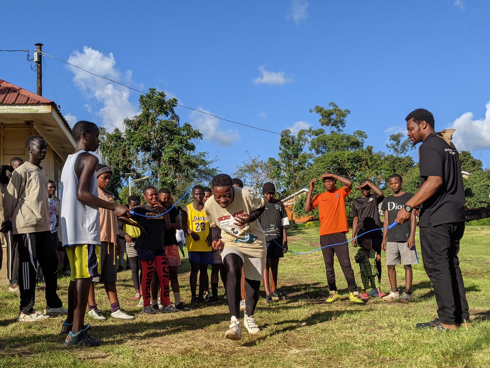
Daily training for boys and girls aged 12-25. We have U15, U18, and senior teams. Sports keeps youth busy, builds discipline, teamwork, and peace between refugees and host community.
200+ Youth Trained💰 Village Saving & Loans
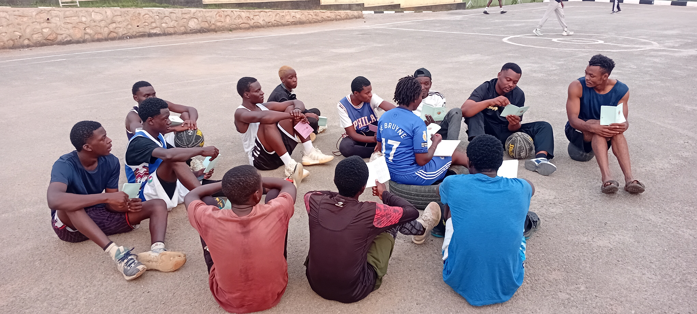
Members 15+ join VSLA groups. They save weekly, get small loans to start businesses. Committee: Chairperson, Secretary, Treasurer. Main source of income for academy activities.
85 Members Active🍞 Bakery & Snacks
Youth learn to bake bread, mandazi, cookies, and chapati. Products are sold in Rwamwanja market. Each youth keeps 70% profit for personal needs, 30% goes to academy.
40 Youth Trained📚 Financial Literacy
Training on money management, business plan creation, savings, and using local materials for sustainability. Includes basic computer and entrepreneurship skills.
🌾 Agriculture - Kitchen Gardens
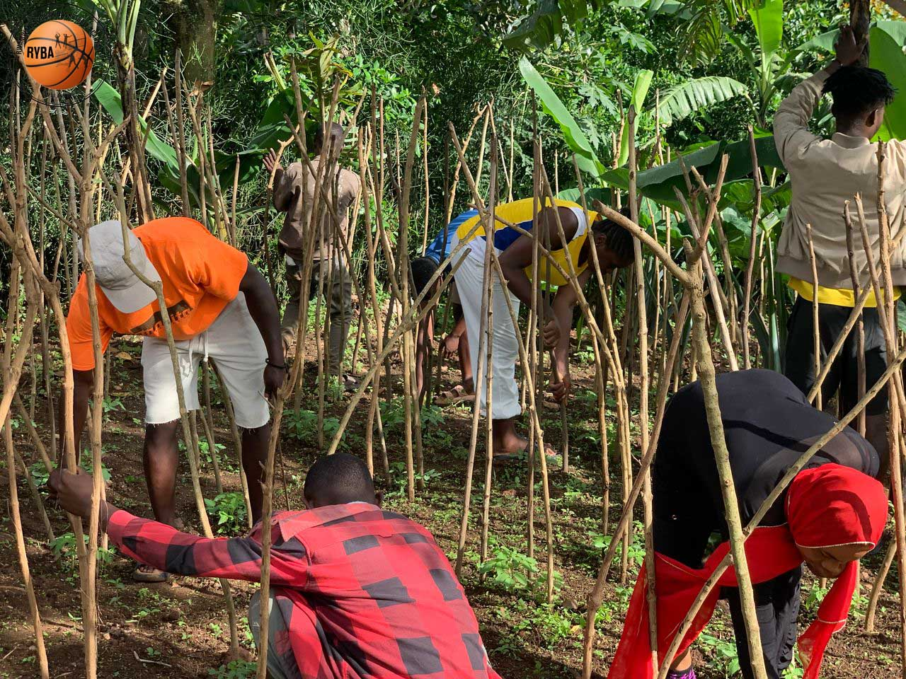
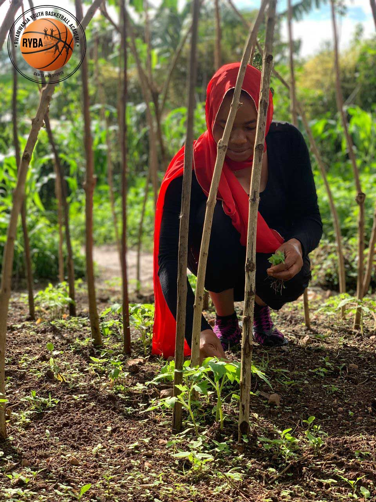
Growing vegetables, maize, and poultry keeping to fight malnutrition (marasmus, kwashiorkor) and generate food and income for families.
✋ Arts, Crafts & Sandal Making
Youth make crafts, sandals, and decorations from recycled materials. This preserves culture and creates products for sale.
Our Impact Since 2022
200+
Youth in Sports
85
In Saving Groups
60%
Girls Participation
5
Programs Running
Our Gallery
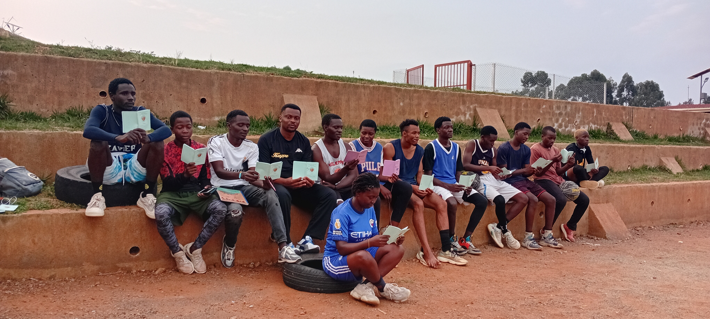
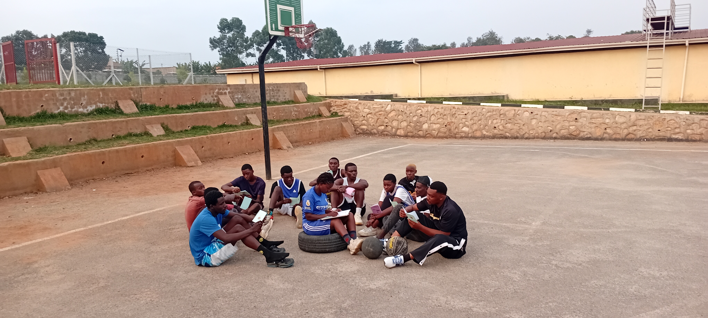
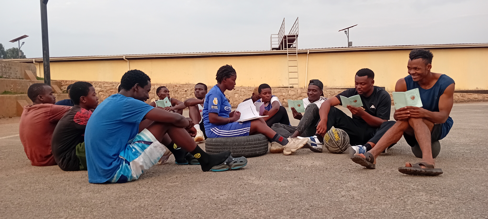
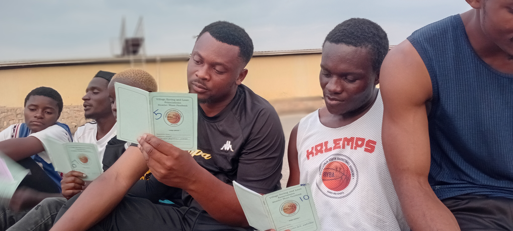
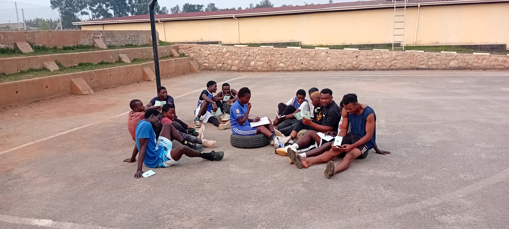
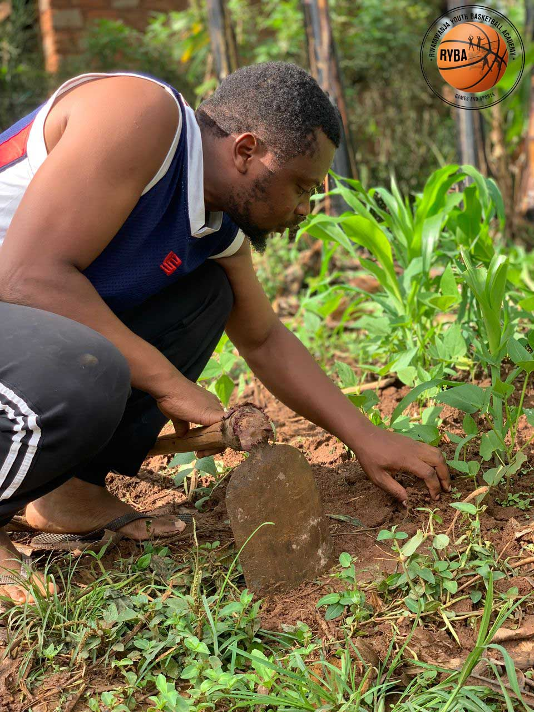
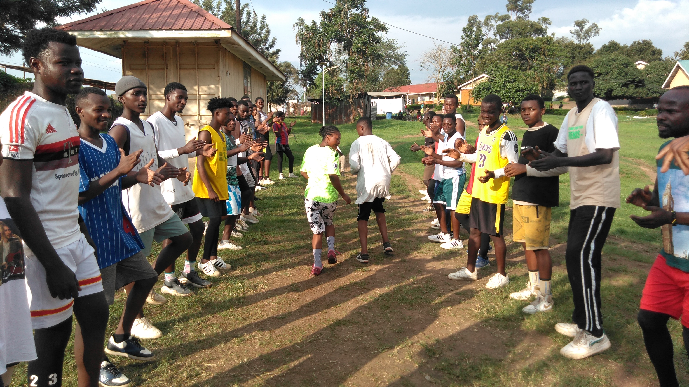
Board & Team Leaders
MUSANGU SHABA
Founder & President
Vision bearer, youth mentor, basketball coachTeam Leader - Sports
Head Coach
Leads daily training & tournamentsTeam Leader - Livelihood
Finance & Saving Group Lead
Manages VSLA and bakery programSuccess Stories
"RYBA saved me from the streets. I was into drugs. Coach Musangu called me to the court. Now I am team captain."
- Jean, 19, U18 CaptainWork With Us
We welcome partnerships with NGOs, donors, churches, schools, and private sector to support:
- 🏀 Basketballs, jerseys, shoes, and a proper court
- 🍞 Baking oven and startup kits for youth
- 💰 Saving group capital & financial literacy materials
- 📚 Scholarships for talented players
- 🌾 Seeds and poultry for agriculture program
Contact Us
Location: Rwamwanja Refugee Settlement, Kamwenge District, Uganda
Phone / WhatsApp: +256 7XX XXX XXX
Email: rwamwanjayouthba@gmail.com
Facebook: Rwamwanja Youth Basketball Academy